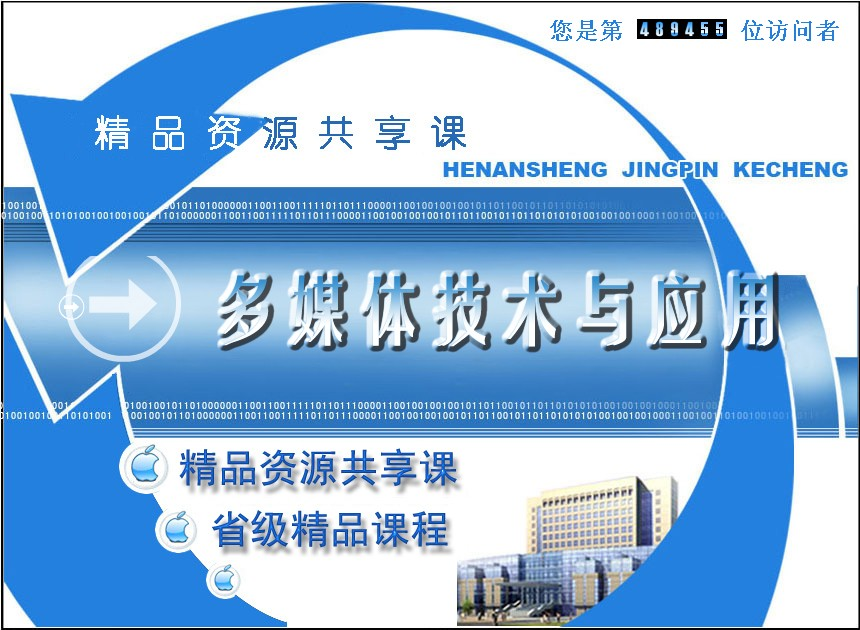
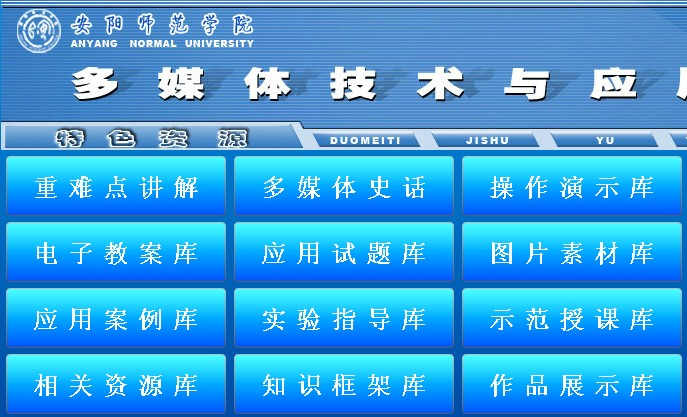
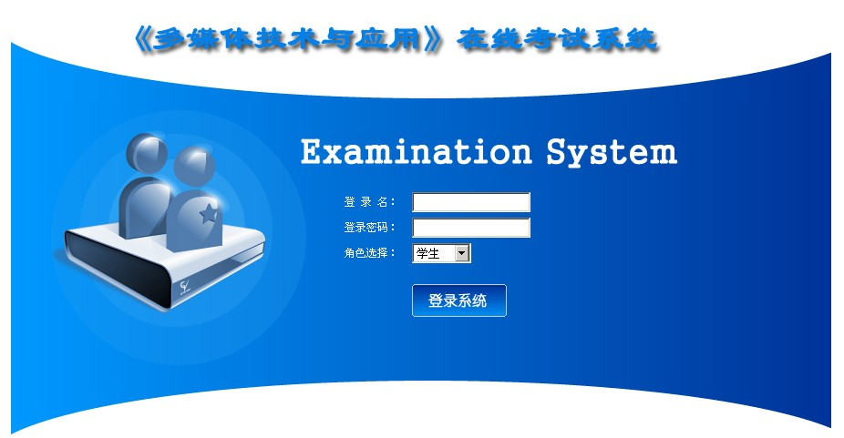

拓展资源
资源标题：单元自测系统
资源地址：http://jpkc.aynu.edu.cn/jkx/dmtjsyyy/jpz...
资源简介：“单元自测系统”是对教学单元知识点的一种考核，本测试系统采用选择题的方式，学生可以随时通过网络平台检验自己掌握的知识点情况。
资源标题：实验报告网络
资源地址：http://jpkc.aynu.edu.cn/jkx/dmtjsyyy/syb...
资源简介：“实验报告网络”是课程实验内容以及实验报告提交的一个综合化的管理平台，教师通过该网络平台制定实验计划、发布实验作业、监控实验过程，学生通过该网络平台了解实验过程、完成相关实验、提交实验报告。

资源标题：《多媒体技术与应用》精品资源共享课网站
资源地址：http://jpkc.aynu.edu.cn/jkx/dmtjsyyy/ind...
资源简介：该资源为《多媒体技术与应用》精品资源共享课网站，涵盖本门课程所有资源，对用户学习本课程有很大帮助。
资源标题：学科专业知识检索系统
资源地址：http://jpkc.aynu.edu.cn/jkx/dmtjsyyy/jpz...
资源简介：“学科专业知识检索系统”为大家提供了近百篇有关课程内容的专业论文，内容涉及多媒体技术、多媒体网络、PS、Authouware、Flash等部分最新的研究成果，使大家在学习课本知识的同时，了解最新的学科动态及技术发展，同时也是对所学内容的一种补充。

资源标题：特色资源库
资源地址：http://jpkc.aynu.edu.cn/jkx/dmtjsyyy/ziy...
资源简介：“特色资源库”集成了本门课程的大量资源，是一个资源平台展示系统，同时将大量的优秀的教师及学生作品集成其中，方便了学生课外的学习，丰富了学生的知识体系。
资源标题：素材资源库
资源地址：http://jpkc.aynu.edu.cn/jkx/dmtjsyyy/jpz...
资源简介：“素材资源库”提供了大量的、数十G的有关音频、视频、图像、动画等类的素材资源，这些资源极大的丰富了多媒体软件的应用，同时也为大家制作多媒体产品提供了更多的便利。
资源标题：试题库系统
资源地址：http://jpkc.aynu.edu.cn/jkx/dmtjsyyy/jpz...
资源简介：“试题库系统”组织了近七百道选择题、填空题、问答题，并附有答案，协助教师组卷，帮助学生复习相关知识，同时该题库还在不断更新中。
资源标题：案例指导库
资源地址：http://jpkc.aynu.edu.cn/jkx/dmtjsyyy/jpz...
资源简介：
“案例指导库”包含了教学中用到的一些案例，采用步骤分解的形式，使同学们按照步骤学习、理解多媒体软件的功能应用。
资源标题：专题讲座库
资源地址：http://jpkc.aynu.edu.cn/jkx/dmtjsyyy/jpz...
资源简介：“专题讲座库”针对多媒体概述、PS、Authouware、Flash四部分内容，采用知识专题的形式，就某些专题应用进行分析说明。
资源标题：作业批改系统
资源地址：http://jpkc.aynu.edu.cn/jkx/dmtjsyyy/jpz...
资源简介：“作业批改系统”包含作业发布、作业提交、作业批改、通告发布四大功能，通过该系统，教师可以更有效的对多媒体软件类作业进行管理。
资源标题：在线答疑系统
资源地址：http://jpkc.aynu.edu.cn/jkx/dmtjsyyy/jpz...
资源简介：“在线答疑系统”采用游客留言、管理员审核、教师回答问题并发布的方式进行管理，从而有效的过滤不良信息。
资源标题：应用案例库
资源地址：http://jpkc.aynu.edu.cn/jkx/dmtjsyyy/jpz...
资源简介：“应用案例库”包含了较多的通过多媒体软件制作的应用实例，本部分实例均采用网页的形式，虽操作步骤较多，但图文并茂，易学易用，使大家在练习中不断提高应用多媒体软件的能力。

资源标题：考试系统
资源地址：http://jpkc.aynu.edu.cn/jkx/dmtjsyyy/jpz...
资源简介：“考试系统”平时不放开，在接近期末时加载本学期最新试题对学生开放练习，使学生对本学期所学有所检验。